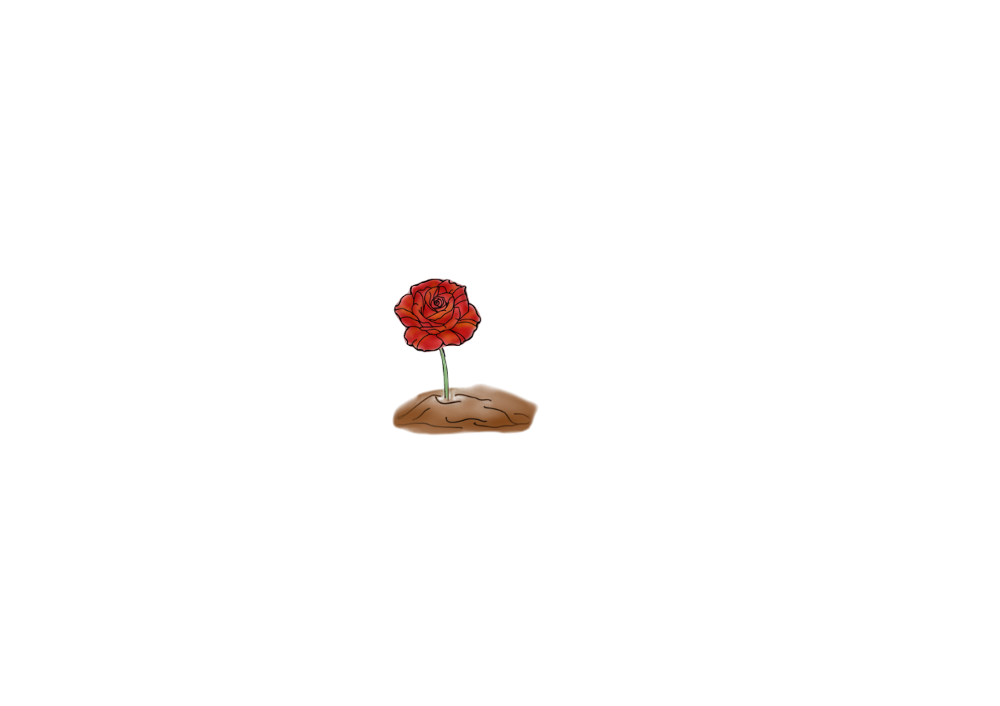

Gül
Anlamı: Aşk, Tutku, Cesaret
Yazılım dünyasında tutkuyu ve azmi temsil eder.
Lale
Anlamı: Mükemmellik, Uyum
Temiz kod yazmanın ve sistem uyumunun sembolüdür.

Orkide
Anlamı: Zarafet, Karmaşıklık
Karmaşık problemleri zarif çözümlerle çözmeyi temsil eder.

Papatya
Anlamı: Basitlik, Neşe
Minimal ve etkili kod yazmanın güzelliğini temsil eder.

Zambak
Anlamı: Saflık, Dürüstlük
Açık kaynak kodun ve şeffaflığın sembolüdür.
MenekÅŸe
Anlamı: Alçakgönüllülük
Sürekli öğrenme ve kendini geliştirme ruhunu temsil eder.

Capella 🌟
Anlamı: Nadirlik, Liderlik
30 çiçekte bir görünen nadir bir çiçektir.